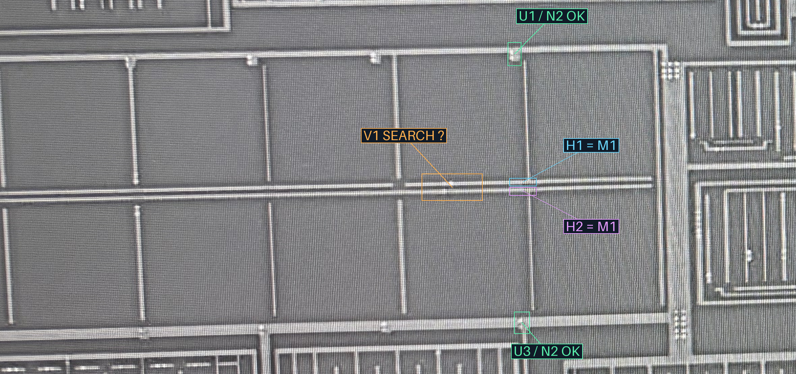
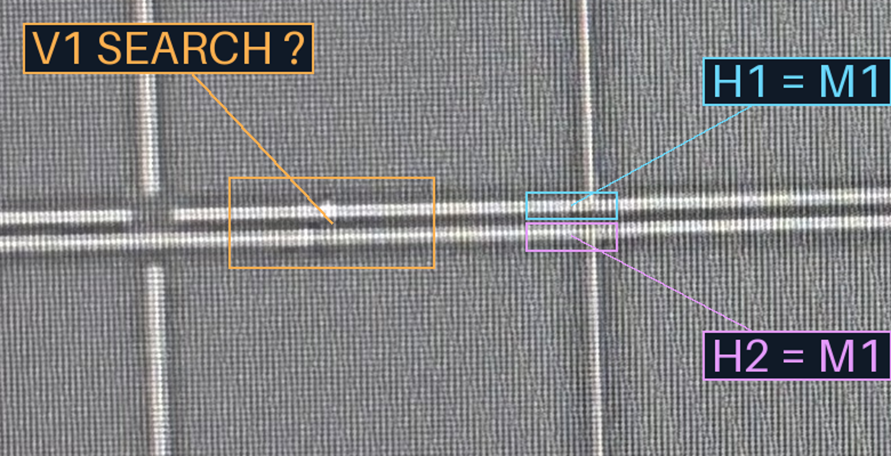
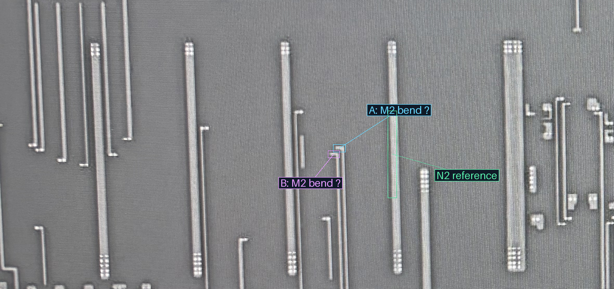
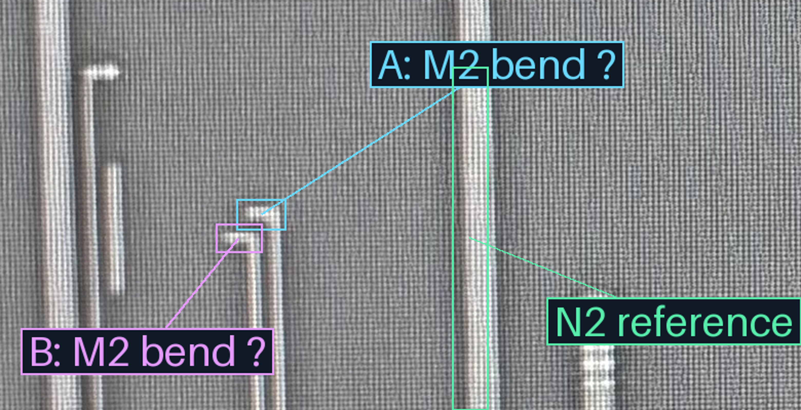

2026-10-23 · 本轮橙框裁决原文 · 身份／隔离记录
移除了旧图绿色竖向中心线，以免示意线跨过H1/H2造成接通暗示。下面矩形仅定位原图；保留完整横向范围和4倍宽局部，可切换M1／M2与原图。
我在M2上看到两处错开的窄拐弯端：A在上方靠右，B在下方靠左。暂列H1→A、H2→B为候选；拍屏纹理使M1单孔中心仍不清楚，未将A/B当成V1孔位，也没有投影或并网。
现在只需核这一组对应：H1经V1接A（上方靠右的窄M2拐弯端），H2经V1接B（下方靠左的窄M2拐弯端），是否正确？若承载不是这两处，请指出相应导体。橙框覆盖范围、M1身份和本处与U1/U2隔离均已审，不再重问。




来源照片分开显示，非精确对齐叠图。没有新增已审跨层连接或自动网表边；共同材料／导体几何不改。浏览器交互未实测。